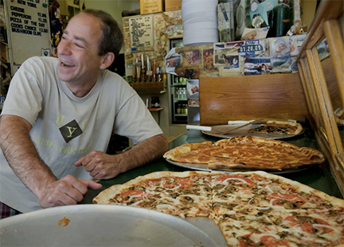
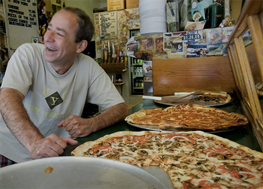

OUR PIZZA IS
PORTLAND'S FINEST
LAUREN GEFFNER
FEBRUARY 8, 1957–NOVEMBER 14, 2020
With heavy hearts, we share with the Escape From New York community that Lauren Geffner has departed. She passed away on Saturday, November 14, following a battle with cancer. Lauren has been an enormous presence in the pizza shop, in the neighborhood, and in our lives for the past 37 years. Words cannot describe the many invaluable roles she played, or how much she will be missed.
Lauren was born on February 8, 1957, in New York City, to a mother who worked as a teacher and father who worked in a department store, both of whom she adored. She graduated from New York’s premier public high school, Stuyvesant, where she was the school’s first-ever female salutatorian, and addressed her graduating class at Carnegie Hall. She attended a number of different universities before graduating from State University of New York at Cortland, where she was valedictorian. Following a brief stint in the publishing industry, Lauren left New York and joined her brother, Phil, in Portland, just one week after the grand opening of Escape From New York Pizza. She eventually became co-owner of the business, which benefited in untold ways from her fairness, intelligence and attention to detail. When not at work, Lauren could be found enjoying books and music, and walking and hiking in all weather, in and around her adopted Portland. Most of all, Lauren relished her life with her family. She was never prouder or happier than when sharing news of her children’s latest activities and accomplishments, whether an art project, work on a grassroots political campaign, or a family trip to Mt. Hood or the American Southwest.
Lauren is survived by her daughter Sarah (28), her daughter Audrey (23), her husband Sydney, and her brothers Phil and Paul. Please keep them in your hearts during the difficult days, weeks and months ahead. Aleha ha-shalom (peace be upon her), Lauren. We are sad, stunned, and appreciative of all you have taught us and shared with us.
With love and gratitude,
Escape From New York


 
